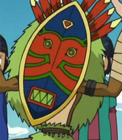

Dio diz:
- Ei, ei! Calma! - guarda o chakram e levanta os braços demonstrando não hostilidade e não despertar a ira de dezenas de símios selvagens
um deles, mais alto, se aproxima de Dio após a atitude. Vem andando lentamente... 10 metros de distância...
Dio diz:
- Não queremos briga. Só queremos passar. - diz diretamente ao provável líder do bando
Dio se pergunta se ele entende seu idioma...
Dio move as duas mãos espalmadas diante o corpo, sinalizando negativamente
Cerea diz:
- Parece que isso não vai adiantar de nada.
Akriloth diz:
- O que tá acontecendo aí, caralho? Tão vendo que eu to com risco de morte aqui não?
os nativos se espantam ao ouvir a voz que não veio de ninguém...
Cerea diz:
- Continue falando, demônio!
Cerea diz:
- Faça alguns rugidos, ou finja que tem dor na barriga.
Akriloth diz:
- Ah, vai tomar no seu cu
Akriloth fica resmungando ali, mas alto
Cerea diz:
- Imbecil, apenas o faça
diz:
- Pasmos, começam a mostrar reverência à última fala que veio do além...
Dio o misto de sol quente, situação apertadae alto risco de dar merda fazem Dio suar muito
diz:
- VAI TOMAR NO CU! - diz um deles
diz:
- VAI TOMAR NO CU! - diz o outro
diz:
- VAI TOMAR NO CU! VAI TOMAR NO CU! - começam a repetir enquanto dançam e parecem começar a saudar e reverenciar os heróis
Akriloth diz:
- MANO, QUE MACAQUICE É ESSA AÍ
Akriloth ruge de raiva, querendo que o tirem dali logo
Dio baixa os braços em pura confusão
diz:
- UUUUUUUUUUUUUUUUU - ao ouvir o rugido, e começam a se aproximar, de forma amigavel, receber os heróis
diz:
- VAI TOMAR NO CU! - diz um para os heróis
diz:
- VAI TOMAR NO CU! - diz outro
Cerea diz:
- ... - fica sem reação e expressão para o que está acontecendo
Dio tenta relevar a conotação ofensiva da frase
Dio diz:
- Vai... tomar no cu? - responde
Akriloth diz:
- VAI TOMAR NO CU, CEREA!
diz:
- VAI TOMAR NO CU!!! - reagem alegremente à fala de Dio, estendendo suas mãos e oferecendo-se a carregar os heróis
Cerea diz:
- AH, MAS EU TE MATO! - guarda a espada e pega o arco
Dio diz:
- Vai tomar no cu. Vai tomar no cu! - diz apontando para o buraco
Akriloth diz:
- ME TIRA DAQUI, PORRA
Os nativos apercebem-se da ação de Dio, e parece estar compreensivos - de fato, era uma armadilha deles, e logo vão a resgatar Akriloth:
Os nativos veem a imagem de Akriloth e seus olhos brilham
Após resgatá-lo, colocam o de pé
Um deles, admirado, vai até Akriloth, e olha em seus olhos
os nativos abrem caminho para Akriloth
Akriloth o manda tomar no cu também, sorrindo graciosamente
o nativo se sente felizardo e recompensado
Akriloth chega no ouvido desse nativo e fala "vai tomar no cu, cerea"
Cerea põe a mão na face e não tira, já que os estranhos não vão parar de proferir profanidades tão cedo
Dio diz:
- Na próxima, vamos pela estrada. - sussurra
os nativos chamam os heróis para dentro da floresta. O caminho diverge em alguns poucos graus do proposto pelo corvo, que está seriosamente confuso e olhando de olhos arregalados para a situação.
Cerea diz:
- Acho melhor seguirmos o corvo.
Dio para o corvo: "Acho que deu ruim, calma aí."
Akriloth faz a seguinte posição (a da esquerda) para os seus novos admiradores: http://eliteimpactlabs.com/images/zyzz-workout.jpg
Dio diz:
- Alguém tem de distrair os macacos, isso vai tirar totalmente a gente do curso.
diz:
- VAI TOMAR NO CU!!! - repetem a posição, maravilhados
Dio diz:
- Cerea, vamos enquanto estão distraídos.
os nativos apontam um caminho seguro para a entrada da floresta. Estão agindo de forma hospitaleira
Dio aproveita a macaquice alheia e toma discretamente o rumo junto ao corvo
Cerea diz:
- Vamos. - segue o corvo, fazendo gestos para este ir um pouco mais rápido
Akriloth diz:
- Vamos por aqui, imbecis, eles vão nos ajudar agora
OS NATIVOS ENCARAM OS DOIS
ENQUANTO REVERENCIAM AKRILOTH, APONTAM FURIOSOS PARA CEREA
Cerea diz:
- Nós temos uma missão. Se quiser, vá com eles.
Dio congela, sente um pingo de suor escorrer de sua testa, passar pela ponta de seu nariz e pingar
Akriloth diz:
- Eles vão querer que vocês venham comigo :|
Cerea fica brava e aponta o dedo do meio para os nativos
Dio diz:
- Vai tomar no cu! - aponta para o demônio
Cerea diz:
- Manda tomar no cu! - diz furiosa para Akriloth
Akriloth diz:
- Vão tomar em seus cus, porcos!
os nativos param imediatamente, confusos, e se entreolham...
diz:
- Manda tomar no cu? - pergunta para o outro
diz:
- Manda tomar no cu... - responde, confuso
Cerea diz:
- Hmm... - tem uma ideia
Cerea diz:
- DEMÔNIO GOSTA DE TOMAR NO CU! - grita bem alto, para os nativos ouvirem
os nativos levantam seus braços
diz:
- DEMÔNIO GOSTA DE TOMAR NO CU!!!!!
Dio quer rolar constituição para ver se consegue segurar o riso
pegam Akriloth pelos braços, o puxando para dentro da floresta
Cerea esquece toda sua fúria e desaba de rir, e se sua anatomia permitisse, estaria rolando no chão
Akriloth diz:
- CEREA, VAI TOMAR NO CUUUUUU - grita com vigor, para que os nativos ouçam bem claro
Os nativos levam Akriloth, são mais de cinco indígenas o puxando...
diz:
- DEMÔNIO GOSTA DE TOMAR NO CU!!!
Dio acha engraçado, mas só consegue cringear com a situação
O corvo entra em desespero, e lembra Dio mentalmente da importância de que permanecessem unidos, recusando-se a guiá-los separadamente...
Cerea diz:
- Sabe, acabei gostando deste... povo. Vamos segui-los
Dio diz:
- Merda, Cerea... Precisamos dele. - bufa, claramente impaciente e incomodado com a situação
Dio são quantos nativos no total?
Cerea segue os nativos, ficando um pouco atrás para se divertir vendo o demônio ser carregado
30 ali, mas eles parecem brotar do nada, então o número é inconstante...
Os nativos conduzem os heróis para a entrada da floresta. O ar é muito puro e limpo, sensação já quase esquecida devido ao tempo perdido em calabouços e masmorras... mas está tudo bem agora. O ambiente é ambundante em vida, principalmente de pequenos animais e insetos. Os nativos que os trouxeram encontram-se com mais dezenas deles que já os aguardavam, e que ficam maravilhados com a imagem de Akriloth!
Um ancião (o que é perceptível, por sua lentidão e fraqueza) sai rapidamente ao ver Akriloth, e volta com uma estatueta de madeira para mostrar para Akriloth e para os outros:
na verdade, a estatueta é um homem de madeira meio errado e zoado que mais parece um meme... mas como Akriloth é bem feio, acaba por parecer uma cópia da aberração...
Os nativos relacionam Akriloth com a estatueta, e não pensam duas vezes antes de mostrarem reverência e serventia...
Akriloth diz:
- Esses sim tem bom gosto, heh - olhando para os dois
Akriloth diz:
- VAI TOMAR NO CU!
Cerea e Dio não sabem nem o que pensar da situação... já o corvo resolveu esperar que vocês passem logo por este obstáculo, e não levantará voo até que passem logo pela tribo...
diz:
- VAI TOMAR NO CU! - dizem todos, alegremente, até mulheres e crianças
um pequeno bebê até tenta aprender a pronunciar...
Cerea diz:
- Bem, se é pra aproveitar isso, vamos fazer alguns testes...
Cerea diz:
- DEMÔNIO CUZÃO! - grita com toda a força
Akriloth vê os arredores ali, vê se tem algo aproveitável para a viagem
Cerea falha. Os nativos parecem suficientemente interessados nas palavras de Akriloth...
Há frutas e mais vegetais e... TESTE DE SABEDORIA - DIFICULDADE 15
Cerea diz:
- Droga. Agora vamos ter que esperar ele se divertir?
• Akriloth rolou 1d20 e tirou 5
ACHO QUE NÃO PRECISO NEM NARRAR NÉ?
Akriloth aponta para o javali, com expressão facial de fome
Akriloth diz:
- CUUUUUUUUUUUUUUUUUUUUUUUUUUUUUUUUUUUUUUUUUUUUUUUUUUUUUUUUUUUUUU
Dio diz:
- Os macacos cultuam ele como um Deus, talvez. Tirá-lo daqui vai ser uma batalha na qual certamente vamos perder. E o corvo não vai nos guiar sem o demônio.
Cerea diz:
- Vamos esperar que o sacrifiquem para livrá-lo de sua forma terrena... ou algo assim
Dio diz:
- Por mais que eu apoie essa ideia, precisamos dele. O mago disse que precisamos ficar juntos. E vivos.
De repente, de trás das árvores, Dio e Cerea se assustam ao perceber a presença de uma pequena menina 5 - 8, humana, loira, caucasiana, vigiando cautelosamente as atitudes de Akriloth
A tribo vai até o javali, o pega (ele não reage) e o colocam na frente de Akriloth
Akriloth gesticula que quer comer o javali
Akriloth e também aponta que seus dois aliados querem comer
a tribo se assusta! uma criança, frightened, pega uma banana e dá para Akriloth. Oferece também uma maçã e outras coisas...
Cerea se aproxima lentamente da menina, mas sem se virar para ela, de forma bem sorrateira
Akriloth come a banana, aceitando as coisas que a criança oferece
Akriloth diz:
- Bom, bom, cu, bom cu. - olhando para a tribo
Dio ergue os dois ombros como se dissesse "Eu não tenho nada a ver com isso."
a pequena criança corre, entrando no meio de todos (Akriloth, então, a nota)
Teste de Sabedoria - DIFICULDADE 15 (todos)
• Cerea rolou 1d20 e tirou 12 + 1 = 13
• Akriloth rolou 1d20 e tirou 6
• Dio rolou 1d20 e tirou 13 + 4 = 17
Os nativos se abaixam, quase se ajoelhando, e, eles, assim como Dio, começam a ouvir em suas mentes a voz da menina, que, universalmente, se adapta de forma a ser entendida por qualquer língua de acordo com o cérebro do ouvinte
diz:
- Eu disse para vocês que vim lhes ensinar o que é certo, bom e verdadeiro... Disse também que Deus estaria chegando. Mas, infelizmente, vocês fizeram uma confusão! Este que trouxeram não é Deus, mas sim um monstro! Uma criatura deformada e maligna!
diz:
- É óbvio que Deus não teria uma aparência tão repugnante! Ele deve estar atrasado! Ou talvez... ou melhor, espere! Acho que já está chegando!
Dio diz:
- Cerea... Vai dar ruim. - diz, preocupado
independente desta comunicação, os heróis todos escutam o som de cavalos e botas de aço vindo do outro lado da floresta, chegando perto...
os nativos estão todos confusos...
Akriloth olha imediatamente para os dois, querendo dizer "é isso mesmo que eu estou pensando?"
Dio mentalmente: "Corvo?"
Cerea diz:
- Droga, demônio, faça os nativos se refugiarem!
Akriloth diz:
- VAI TOMAR NO CU! - aponta para as tendas deles
Cerea diz:
- E você... - agarra a menina pelos braços - Qual o seu nome? Você está a serviço dos guardiões?
De repente, Dio sente que acabou de perder sua conexão astral e mental com o corvo! Que diabos teria acontecido? Como se o mago o tivesse desfeito...
OS NATIVOS SE ESPANTAM AO VER A CENTAURIDA AGARRAR A MENINA
diz:
- UUU UUU - começam a puxar arcos e lanças, os apontando para Cerea
Dio diz:
- Cerea! Akriloth! Vamos embora!
Akriloth diz:
- CU! CU! - sinalizando negativamente, se pondo entre Cerea e a tribo
a tribo como um todo começa a apontar suas armas para os heróis...
Akriloth diz:
- É hora de vazar! Corram!
Cerea pega o demônio e Dio e tenta os levantar, enquanto corre para a direção que chegaram na tribo
Os nativos estão demasiadamente ocupados com a mensagem da garota e com a chegada do verdadeiro deus que não foram atrás dos heróis, que conseguem fugir despercebidos...
Enquanto isso, podem observar na espreita a seguinte cena:
Na frente, dois cavaleiros sem cavalo (fullplatearmor+15brilhandocomreflect)... em seguida, dois cultistas misteriosos (EXATAMENTE COMO OS VISTOS EM VIRTUS JUNXIT). Por último, um homem, branco, sem armadura, vestindo apenas um robe simples e largado (como um jedi) chega. Em seu ombro... O CORVO! Há algo errado... O corvo está com seus olhos completamente dourados, e não há conexão entre ele e Dio... todavia, o homem apresenta o corvo mágico para a tribo, que fica maravilhada e logo começa a adorá-lo!
Dio escuta novamente a voz da menina:
diz:
- Vejam! Este é Deus! O único e verdadeiro! E veio lhes trazer a salvação! - a menina esboça um sorriso, e a tribo começa a comemorar alegremente... CONTINUA